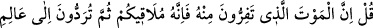
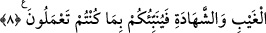

sabırsızlıklarından dolayıdır. Aşklarına yenik düşen meczublar hakkında söylenecek söz
yoktur. Bazı şâirlerin de ifâde ettikleri gibi:
Gâfiller ölümden mühlet istediler
Âşıklar “hayır hayır çabuk olsun” dediler.
Bir gün bir ilaç satıcısı ne güzel dedi:
“Sana şifa lazımsa acı ilaç iç.”
Fakat istek ve irâdesi doğru olmayan kimse, nefisle mücadele etmekten kaçar ve tabiat
sığırını kesmekten korkar. İşte bu gibi kimselerin tabiî ölüm karşısında kelimelerin ve
ifâdelerin açıklamaya yetmediği kadar kalbi katılaşır. Allah korusun!
8. De ki: Sizin kendisinden kaçtığınız ölüm, muhakkak sizi bulacaktır. Sonra da
görüleni ve görülmeyeni bilen Allah’a döndürüleceksiniz de O size bütün
yaptıklarınızı haber verecektir.
“De ki: Sizin kendisinden kaçtığınız ölüm, muhakkak sizi bulacaktır.” İnkârınızın
günahı sebebiyle cezâlandırılma korkusuyla temennî etmeğe bile cesâret edemediğiniz
ölüm, onu engelleyecek hiçbir engel olmadığı halde elbette size ulaşacaktır. Siz
ölümden kaçsanız da ölüm mutlaka size ulaşacaktır. Sanki, ondan kaçış onun daha çabuk
ulaşmasına sebep teşkil etmektedir. Çünkü ölümden kaçan ömrünün bereketini bulamaz.
Tersine ölüm yönüne kaçmış ve ölüm onu karşılayıp ona kavuşmuş olur. Şöyle bir söz
söylenmiştir: Bir iş tersine döndü mü bulunan çare de felâket olur. İnsan irâdesi dışında
zorunlu olarak gelen tabiî ölümden “Sonra da görüleni ve görülmeyeni bilen Allah’a
döndürüleceksiniz” âyetinde geçen red kelimesi, bir şeyi kendisine veya hallerinden
bir hale göre geri çevirmektir. Bu âyette de kendi zâtına göre geri çevirme anlamında
kullanılmıştır. “Eğer (dünyaya) geri gönderilseler yine kendilerine yasak edilen
şeylere döneceklerdir” (el-Enam, 6/28) âyet-i kerîme’sinde olduğu gibi. Önce
bulunduğu hâline göre geri çevrilmek anlamına örnek şu âyet-i kerîme’dir: “Ey îmân
edenler! Eğer kâfirlere uyarsanız, sizi gerisin geriye (eski dininize) döndürürler...”
(Âl-i İmran, 3/149) Âyette geçen “Görüleni ve görülmeyeni bilen”; yâni hiçbir hâliniz
kendisine gizli olmayan, kendisinden başka sâhib ve hâkim bulunmayan Cenab-ı Hakk’a
döndürüleceksiniz. Onların gizli halleri ve açık olan amellerinden haberdar olması
itibariyle, Allah Teâlâ yüce zâtını “görüleni ve görülmeyeni bilen” sıfatıyla
nitelendirmiştir. Bunun açıklamasının tamamı “Haşr sûresi” nde geçmiştir.
“O size” görülen ve görülmeyen çirkinliklerden, küfürden ve isyanlardan dolayı